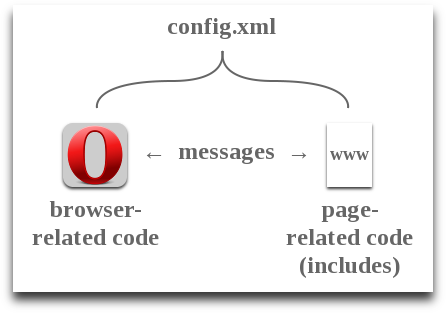

Opera extension code examples
From Opera 15 onward, Opera 11 & 12’s extension format is no longer supported, and instead, we’ve switched to Chromium’s extension model. Check out our new documentation for developing extensions for Opera 15 and higher and start building your own extensions.
Contents
- Introduction
- Opera extension overview
- Get to the code already!
- Example 1: Make a button
- Example 2: Make the button open popup window
- Example 3: Add a badge to a button
- Example 4: Add a badge that reflects a page action
- Example 5: Make a button that executes page-related code
- Conclusion
Introduction
Many people find it easier to learn by example, so here are some snippets of code that create Opera extensions with basic functionality. Depending on what you'd like to create, you can choose one or more of these examples to use as the basis for your own extension.
Opera extension overview
We have more in-depth articles that introduce Opera extensions and explain their structure, but here's a quick refresher.
As proponents for open web standards, it's only natural that we chose an existing W3C specification for Opera extensions—the Widget Packaging specification. This consists of web files (HTML, JavaScript, CSS, etc.) together with a config.xml file, all compressed as a zip file. The only difference is that widgets are renamed with a .wgt extension and Opera extensions are renamed with a .oex extension.
Opera extensions can do two things:
- Extend the browser UI and functionality
- Read and locally edit web pages
Consequently an Opera extension can be thought of as having two parts, as seen in the diagram below:

Browser-related code does things such as adding a button to the toolbar or creating a popup window. Page-related code, kept inside an includes directory, is used for reading or changing web pages that the user is viewing. The two types of code can communicate with each other using postMessage() methods and onmessage events.
Get to the code already!
Please note that all the examples below have a similar config.xml file and index.html file that just calls a background.js script. If you'd like to examine these, please download and unzip each example extension.
Example 1: Make a button
Firstly, a very basic example that simply adds a button to Opera's toolbar. When you click on the button, a message is printed in the browser's error console.
// background.js
// Add a button to Opera's toolbar when the extension loads.
window.addEventListener("load", function() {
// Buttons are members of the UIItem family.
// Firstly we set some properties to apply to the button.
var UIItemProperties = {
disabled: false, // The button is enabled.
title: "Button example", // The tooltip title.
icon: "icon_18.png", // The icon (18x18) to use for the button.
onclick: function() {
// Let's output a message to the error console.
window.opera.postError('"Button example" clicked.');
}
};
// Next, we create the button and apply the above properties.
var button = opera.contexts.toolbar.createItem(UIItemProperties);
// Finally, we add the button to the toolbar.
opera.contexts.toolbar.addItem(button);
}, false);Download this example extension.
Example 2: Make the button open popup window
As well as the background.js script, we need an HTML file which will be displayed in the popup window.
// background.js
// Add a button to Opera's toolbar when the extension loads.
window.addEventListener("load", function() {
// Buttons are members of the UIItem family.
// Firstly we set some properties to apply to the button.
var UIItemProperties = {
disabled: false, // The button is enabled.
title: "Popup example", // The tooltip title.
icon: "icon_18.png", // The icon (18x18) to use for the button.
popup: {
href: "popup.html",
width: "500px",
height: "500px"
}
};
// Next, we create the button and apply the above properties.
var button = opera.contexts.toolbar.createItem(UIItemProperties);
// Finally, we add the button to the toolbar.
opera.contexts.toolbar.addItem(button);
}, false);<!-- popup.html -->
<!DOCTYPE html>
<html>
<head>
<title>Popup example</title>
</head>
<body>
<h1>Hey, whassup! I'm a popup.</h1>
<div>Congratulations, this extension is working.</div>
</body>
</html>
Download this example extension.
Example 3: Add a badge to a button
A badge is a useful feature that can dynamically display text in your extension's button. You could use it for, e.g. displaying the number of unread Tweets or blog posts since the user last checked. In this example, we'll add a function that increases the number shown on the badge every time its button is clicked.
// background.js
// Add a button to Opera's toolbar when the extension loads.
window.addEventListener("load", function() {
// Buttons are members of the UIItem family.
// Firstly we set some properties to apply to the button.
var UIItemProperties = {
disabled: false, // The button is enabled.
title: "Button badge example", // The tooltip title.
icon: "icon_18.png", // The icon (18x18) to use for the button.
onclick: updateBadge,
badge: {
textContent: '0',
backgroundColor: '#006',
color: '#ff6',
display: 'block'
}
};
// Next, we create the button and apply the above properties.
var button = opera.contexts.toolbar.createItem(UIItemProperties);
// Finally, we add the button to the toolbar.
opera.contexts.toolbar.addItem(button);
// Increase the number on the badge by one
function updateBadge() {
button.badge.textContent = parseInt(button.badge.textContent) + 1;
}
}, false);Download this example extension.
Example 4: Add a badge that reflects a page action
Next, we'll use the messaging system between browser-related code and page-related code. To set this up, we need a directory named includes in which we create a JavaScript file—base.js in this case but it could be named anything. Incidentally, this file is known as an injected script because it affects pages in the user's environment but not on the web server.
// background.js
// Add a button to Opera's toolbar when the extension loads.
window.addEventListener('load', function() {
// Buttons are members of the UIItem family.
// Firstly we set some properties to apply to the button.
var UIItemProperties = {
disabled: false, // The button is enabled.
title: 'Page interaction example', // The tooltip title.
icon: 'icon_18.png', // The icon (18x18) to use for the button.
badge: {
textContent: '0',
backgroundColor: '#006',
color: '#ff6',
display: 'block'
}
};
// Next, we create the button and apply the above properties.
var button = opera.contexts.toolbar.createItem(UIItemProperties);
// Finally, we add the button to the toolbar.
opera.contexts.toolbar.addItem(button);
// Listen for messages from the UserJS.
opera.extension.onmessage = function(event){
window.opera.postError('Received message from base.js');
if (event.data === 'LOAD') {
button.badge.textContent = parseInt(button.badge.textContent) + 1;
}
}
}, false);// includes/base.js
// Background scripts can't directly interact with web pages.
// To solve this, we create this UserJS to send messages to the background script.
window.addEventListener('load', function(){
window.opera.postError('Sending message to background.js');
opera.extension.postMessage('LOAD');
}, false);Download this example extension.
Example 5: Make a button that executes page-related code
Finally we'll add an action to our button so that page-related code is only executed when the button is clicked. In this case, text within the page's body will increase in size. This example also uses messaging but in the opposite direction to the previous example.
// Add a button to Opera's toolbar when the extension loads.
window.addEventListener("load", function() {
// Buttons are members of the UIItem family.
// Firstly we set some properties to apply to the button.
var UIItemProperties = {
disabled: true, // The button is disabled.
title: "Button & injected script example", // The tooltip title.
icon: "icon_18.png", // The icon (18x18) to use for the button.
onclick: function() {
// Send a message to the currently-selected tab.
var tab = opera.extension.tabs.getFocused();
if (tab) { // Null if the focused tab is not accessible by this extension
tab.postMessage('go');
}
}
};
// Next, we create the button and apply the above properties.
var button = opera.contexts.toolbar.createItem(UIItemProperties);
// Finally, we add the button to the toolbar.
opera.contexts.toolbar.addItem(button);
function enableButton() {
var tab = opera.extension.tabs.getFocused();
if (tab) {
button.disabled = false;
} else {
button.disabled = true;
}
}
// Enable the button when a tab is ready.
opera.extension.onconnect = enableButton;
opera.extension.tabs.onfocus = enableButton;
opera.extension.tabs.onblur = enableButton;
}, false);// This script is only executed once the page has loaded.
window.addEventListener('load', function(event) {
// Set a toggle so we can switch the style change on and off.
var toggle = false;
// Get the body's current style object and the property we want to edit.
var body_style = (window.document.body) ? window.document.body.style : false;
var original = (body_style) ? body_style.fontSize : '1em';
// Execute this when a message is received from the background script.
opera.extension.onmessage = function(event) {
if (!toggle && body_style) {
body_style.fontSize = '1.4em';
toggle = true;
} else if (body_style) {
body_style.fontSize = original;
toggle = false;
}
};
}, false);Download this example extension.
Conclusion
Hopefully these examples provide a good foundation for you to build on. Of course, there may be different ways of achieving the same result so feel free to develop extensions using the method most appropriate for you and your users. Lastly, if you're stuck for ideas for your extension, have a look at the Opera extensions wishlist for inspiration.
This article is licensed under a Creative Commons Attribution-Noncommercial-Share Alike 3.0 Unported license.
Comments
The forum archive of this article is still available on My Opera.
-
Trying to download an extension to get the code, instead, Opera installs it. How do I get the code?
-

open it with winrar
-

Trying to install the extension, but all it does is re-downloads it. :-/
No new comments accepted.Michael
Sunday, December 30, 2012
vicanfon
Saturday, January 5, 2013
Jason
Monday, November 18, 2013